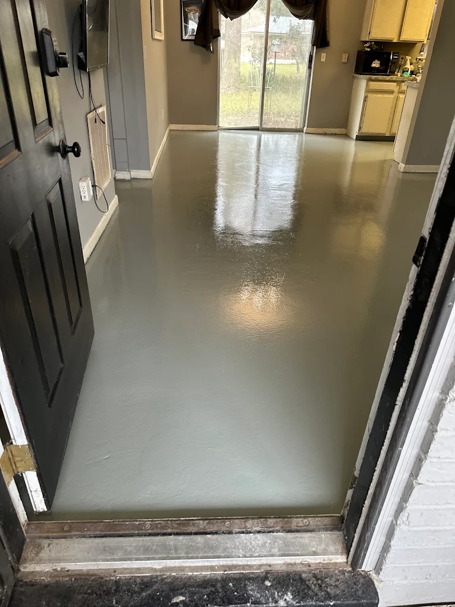

JW journal
Guidance for Jacksonville paint, floors and coatings.
Owner-led notes on preparation, climate and finish choices for homes across Duval, Clay, Nassau, Baker and northern St. Johns counties.
Latest from JW
Start with the surface in front of you.
These articles stay inside facts already published on the site: service scope, climate realities in Northeast Florida, and how to prepare for an estimate. No invented prices, warranties or reviews.

Flooded Floors in Jacksonville: Restoring Water-Damaged Floors After a Hurricane or Storm
What to do with flooded floors after a Jacksonville storm: the order of work, what to save for insurance, and how damaged plank, tile and hardwood get repaired or replaced.
Read the article →
Garage Floor Coating Jacksonville Guide: Epoxy vs. Polyaspartic vs. Polyurea
How epoxy, polyaspartic and polyurea garage coatings differ in Northeast Florida heat and humidity, and why slab prep decides whether any of them last.
Read the article →
How Much Does Epoxy Flooring Cost in Jacksonville? (2026 Guide)
What actually drives the price of a garage or concrete floor coating in Northeast Florida, and how to compare epoxy quotes line by line.
Read the article →
Luxury Vinyl Plank Flooring in Jacksonville: Slabs, Moisture and Layout
How slab prep, Florida humidity, layout and transitions shape a lasting LVP floor, and what to have ready for a JW estimate.
Read the article →
Garage Floor Epoxy in Jacksonville: Heat, Humidity and Proper Prep
Northeast Florida heat, humidity and hot-tire pickup can undo a rushed garage coating. See how JW scopes prep, finish options and return-to-use.
Read the article →Start the conversation
Tell JW about the surface you want to change.
Call Monday through Saturday, 7 AM to 8 PM, with the property ZIP, current material and visible condition.